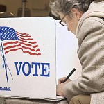

2012-11-12 08:00
Why do idealists vote for losers? Or: Why I didn’t vote for Obama.
For the last two years we heard we had a choice between two totally different candidates from two vastly different political parties, with two completely different roadmaps of where they wanted to take the country. If the Republicans had won, said the Democrats, there would have been a virtual Armageddon for the Middle Class, with the destruction of the world as we have known it since FDR and the precipitous rise of sea levels because of global warming. And if the Democrats had won, so the Republicans said, the real Armageddon would occur because Obama actually is the Anti-Christ. Either way, the election was framed in the most extreme terms by both parties as a last ditch effort to save the country — if not Western Civilization and the planet — from evil. There are only two views allowed in American politics, hence only two evils. And what sensible person wouldn’t vote for the lesser of them? But each time we do, we predictably get — evil.
In one corner we had the Republicans, a party 91.5% White — a party that reviles gays, atheists, civil libertarians, Muslims, undocumented workers, the French with their baguettes and 35-hour work weeks, foreigners in general, abortion, contraception, NPR, Subarus, quiche, Keynesian economics, gun control, environmental and consumer protection, the social safety net — and which rejects science, evolution, and climate change — instead embracing a hodgepodge of religious fundamentalism, Ayn Randian “Objectivist” worship of individual greed, Austrian/supply-side economics, American and Israeli Exceptionalism; and which every year talks about increasing the military budget, beefing up an already-bloated security state, putting more people in prison, disenfranchising as many young and minority voters as it can, deporting as many Latinos as possible, and rollling back civil liberties to Soviet era standards. This was their idea of Hope and Change.
The “new” Republican party has been rightly viewed as frighteningly extremist by even traditional Republicans, but this ignores the fact that it has been extremist throughout the life of most Boomers — dating back to Goldwater, to Patrick Buchanan and, yes, even Saint Reagan. To add a little perspective, in 2011 births from minorities overtook those of Whites. For the GOP, then, 2012 was the Last Hurrah for the Defense of the White Man, Western Civilization, Christianity, and traditional values before demographic Armageddon — and for many Republicans, the real one — arrives. Its Birther obsession with a “Muslim” “Kenyan” could be explained by the racist fears that grew the KKK to such huge numbers in most of the Red states. But this was the last election in which Republicans could woo exclusively White voters. As even Republican pundits now acknowledge, at some time very soon the Republican tune will have to change. Many of the Tea Party faction are older, and hate tends to pop blood vessels. Demographics are not on the Republican Party’s side, though they seem unwilling to change their “core values.” Instead, next time they’ll have a few brown faces delivering the message.
In the other corner we have the Democrats, a party 66.2% White and arguably more representative of American demographics in general, led by a newly-reelected President who not only hobbled himself in the first two years of his Presidency by choosing a muddled middle road that frustrated friend and foe alike, but who is still opposed by the same obstructionist Congress that still has not discovered either moderation or compromise. Obama’s second term will look remarkably like his first.
My Liberal friends wail: if only the Republicans would let Obama make the changes we voted for! But this is self-deception, something I succumbed to myself. In his first two years, the new President had a Democratic majority in Congress, but neither his Congressional majority nor the President himself showed much enthusiasm for their mandate or any intention of fulfilling campaign promises. Why was that? It’s important to consider what the Democratic Party really is today to understand why it happened..
Quite the opposite of the Republican caricature of “Socialist” Democrats, ever since the Reagan era the Democratic Party has moved consistently to the right on most economic issues. Bill Clinton’s “centrist” Presidency brought us deregulation of the financial industry, globalization, outsourcing, dismantling of many programs for the poor, and drug enforcement programs that tripled incarceration of the poor and minorities. His Labor Secretary, Robert Reich, saw nothing wrong with exporting a million IT jobs to India, though Reich sings a different tune today. The Democratic Party has participated in, and been equally culpable in, the dismantling of the Middle Class, long before Obama took office. Since then, the Wall Street and Motor City bailouts — with their “trickle-down” benefits to Main Street while failing to help mortgage owners directly — have predictably yielded unimpressive results. Pumping money into banks while not requiring them to lend it out has predictably resulted in a lackluster recovery. And with all the money tied up in banks, wars, and debt to pay off past wars, the stimulus projects created were insufficient to create enough jobs. So when the chips were down, Wall Street and the Defense industry turned out to be more important to the Democrats than Main Street.
We’ve seen the Democratic Party’s “new” neo-Liberal embrace of globalization and the military power to enforce it numerous times. The civilian body count from Republican war hawks in Iraq was a match for the Democrats’ civilian carnage in Viet Nam. Most Congressional Democrats have consistently supported wars in Iraq, Afghanistan, Libya, Pakistan, Yemen, and elsewhere, and have no real objection to another one in Iran — though you’d hardly believe it from the DNC convention, at which they positioned themselves as an anti-war party while simultaneously defending “surgical” drone attacks, SEAL raids, and trumpeting their militarism. If only Drone Wars really were conducted by surgeons instead of butchers.
In foreign policy and civil liberties, the President and the Democratic Party has as shameful a record as the Republicans. Guantanamo is still open. Threats of war on Iran, sanctions, and Congressional letters and resolutions for consumption by AIPAC, WINEP, and wealthy pro-Israel donors flow as easily from Democratic mouths as Republicans. Whistleblowers are more likely to face persecution under Obama than under Bush. As during the Bush era, American vetoes at the UN protecting Israel for war crimes mirror Russia’s protections of Syria. Torture is still used by the CIA and the military and, as a professional (or personal) courtesy, the Obama Administration announced recently that no one in the CIA would be prosecuted for deaths that occurred during torture under any administration. It is quite likely that the next Secretary of State will be John Kerry — a fan of war in the Balkans and Libya. Not much has changed from the Bush years.
You call this Hope and Change?
Many Democrats, not just Progressives, believe the President and the party simply lacked courage, backbone, brass, cajones. But all that’s changed, now! Speeches at the DNC by Elizabeth Warren, John Kerry, and Deval Patrick advanced this notion while crowing that the party has rediscovered its bravery. But the problem is not with anybody’s cajones. It’s that Democrats today have turned their backs on Progressive values and acquiesced to neo-Liberalism, globalism, militaristic foreign policy, and they themselves preside over the dismantling of social programs and deregulation.
The President might have played “tough” on British Petroleum but, in a case of literally letting the foxes inspect the chickens, he let poultry companies replace FDA inspectors with their own. The Democratic Progressive Caucus, branded “Communists” by former GOP crazy Alan West, does not appear to have much value to its own party. Democrats like Barney Frank, Dennis Kucinich, and Ross Feingold have been turned out to pasture. Ted Kennedy’s seat was recently occupied by a Republican and this may be repeated if the President taps John Kerry for Secretary of State. Neo-Liberals, globalists, Blue Dogs and Dixiecrats are what Democratic voters have to chow down on, but it has been a meal set before them by their own party leadership.
During this year’s DNC convention, besides the well-scripted theme of “we’re all in this together,” viewers witnessed nauseating GOP-Lite displays of militarism (“we got Bin Laden”), defensive genuflection to the Gods of Entrepreneurship, conspicuous and exaggerated religiosity, American Exceptionalism (“USA, USA, USA”), and scripted pandering to pro-Israel hardliners. From the GOP’s perspective, the Democrats were vulnerable to criticism that they wouldn’t worship at all these altars simultaneously. What a miscalculation! But this is where the Democratic Party is right now. Perhaps it’s because, as one pundit suggested, the Democrats have had to embrace Left, Center — and Right — since Republicans have ceded everything except the Far Right. But for many Progressives and even some traditional Democrats, today’s Democratic Party most closely resembles the Republican Party under Eisenhower — with considerably more saber-rattling than the former general, and with much less a commitment to building infrastructure.
It was once true that American political campaigns could not be fought without millionaires. The Citizens United ruling changed all that. Now it takes billionaires. People like Sheldon Adelson and the Koch Brothers (for Republicans) or Haim Saban or George Soros (for Democrats) or powerful interest groups and PACs managed again to cherry-pick their respective party’s messages, ads, and platforms. Was it a coincidence that, during the election, in a month with an unprecedented number of mass shootings, the President explicitly pooh-poohed bans on assault weapons and controls on large ammunition purchases? The Democrats didn’t want to be in the NRA’s sights. Why did not one Democrat bring up Global Warming? While there was much talk of strengthening the Middle Class, there was not a peep about the poor. Where was the Democrats’ new-found backbone?
Another disturbing example of pandering was this year’s inclusion of “God” and “Jerusalem” language in the 2012 DNC platform. Despite failing a voice vote on the floor of the convention, the party platform was changed by decree of the President and DNC Chair Debbie Wasserman-Schultz, through consultation with several AIPAC lobbyists who made sure the wording was just right. The vote’s results and the speaker’s teleprompter text announcing those results had already been scripted before the vote.
So here was the choice before the electorate:
Voters had a binary choice between two candidates who, between them, spent over $6 billion of PAC and wealthy donor money to deliver on promises to their true “constituencies.” Voters could choose between two — only two — candidates because, despite the spectacle of up to ten GOP candidates duking it out in the primaries this Summer, in the Fall there was curiously only room for two on the podiums offered by the major media and self-appointed election groups — which habitually ignore third party candidates they deem “non-viable.”
After the two candidates were chosen, both of them shook their Etch-a-Sketches vigorously. Positions were calibrated and adjusted precisely through polls and focus groups to present a calculated but misleading impression. What a surprise it was, then, for convention watchers to “discover” that Republicans actually love Hispanics and Medicare (even while trying to get rid of both). Who knew that the Democrats loved Judeo-Christian values and SEAL teams so much? Or that the Romneys were so poor they had to eat off an ironing board? Or that Democrats have recognized Jerusalem as Israel’s “undivided” capital all along?
Not everyone appreciates that our voting choices have been trivialized, limited, scripted, and sabotaged by numerous mechanisms designed to attenuate or neuter real democracy. Not everyone appreciates the insinuation that “third party” candidates “contaminate” elections — like Green Party Candidate Jill Stein or Libertarian Gary Johnson or candidates from the American Independent Party, American Third Position Party, Constitution Party, Grassroots Party, Justice Party, Objectivist Party, Socialism and Liberation Party, Peace and Freedom Party, Prohibition Party, Reform Party, Socialist Party USA, Socialist Equality Party, and the Socialist Workers Party — and half a dozen more so-called “crackpots.” Have you ever heard anything in the press about any of them? Apparently the Fourth Estate doesn’t appreciate their intrusion into electoral politics either. Rather than informing voters, they censor all but what’s truly “newsworthy.”
Short of campaign reform, reducing term limits, repealing Citizens United, abolishing the Electoral College, using existing law to limit the concentration of ownership of newspapers and the media, keeping lobbyists and foreign nations out of our politics, making voting compulsory like jury duty, limiting the voting season to weeks instead of years, making it easier to vote, not harder, and presenting not just two but a multiplicity of ideas from a variety of candidates — we must stop referring to the quadrennial political theater we call Presidential elections as a sign of a healthy democracy. The repair of even some of these seriously broken systems should be a goal for both parties to embrace, but they have repeatedly failed to achieve even one of them. And why? Because when it comes right down to it, neither party really stands for democracy as much as self-preservation.
_
Everybody loves a winner._ In the binary American electoral system, you ultimately either vote for a winner or a loser, whereas in a parliamentary system winners and losers form coalitions and hash out their differences. In the American system, voting one’s principles is viewed as senseless. Better to vote for the most “viable” candidate whose chances of “getting something done” are greater than the “crackpot” idealist. Any other choice is just “throwing your vote away” — even if he lies or fails to live up to promises and rhetoric. This is just about the riskiest form of voting I can think of. Yet, despite all evidence to the contrary, the illusion of “getting something done” still persists.
Principles actually do count for something. Are we not moved by the passion of principles when we hear a convention or stump speech? How then can we so easily discount our own? Voting is not simply about choosing a winner or loser. It is also about registering exactly what we want in government, even if our candidate “loses.” The alternative is to simply acquiesce or rubber-stamp PAC-designed campaign promises — knowing at some level that they mean nothing after the election. Ultimately, betraying your own principles is the surest way to throw your vote away.
So as long as I’m throwing my vote away in what passes for electoral democracy, I’d rather do it myself — and not let some politician do it for me.